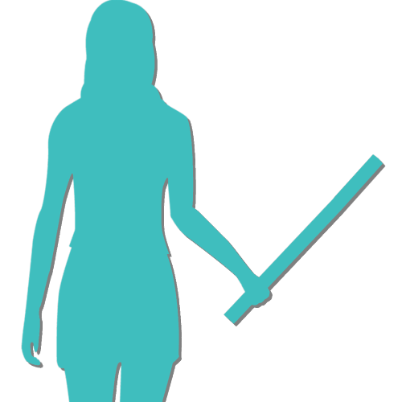
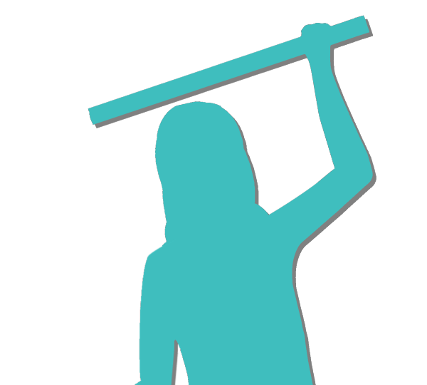
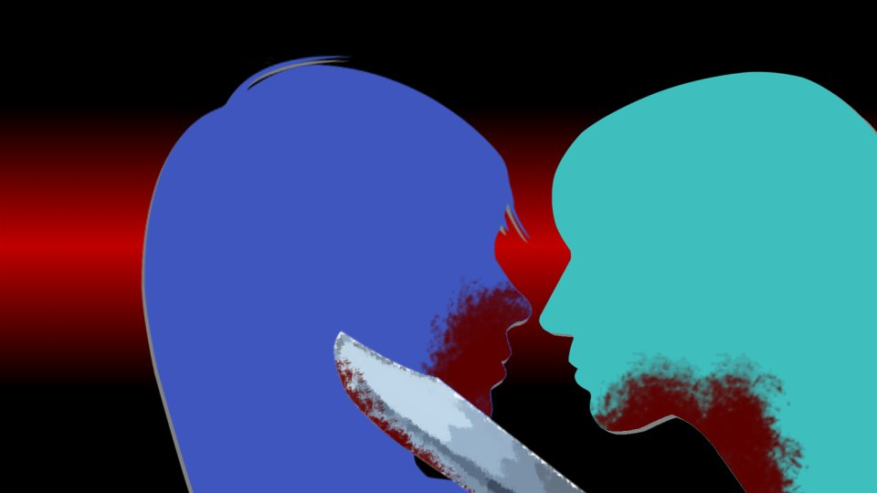
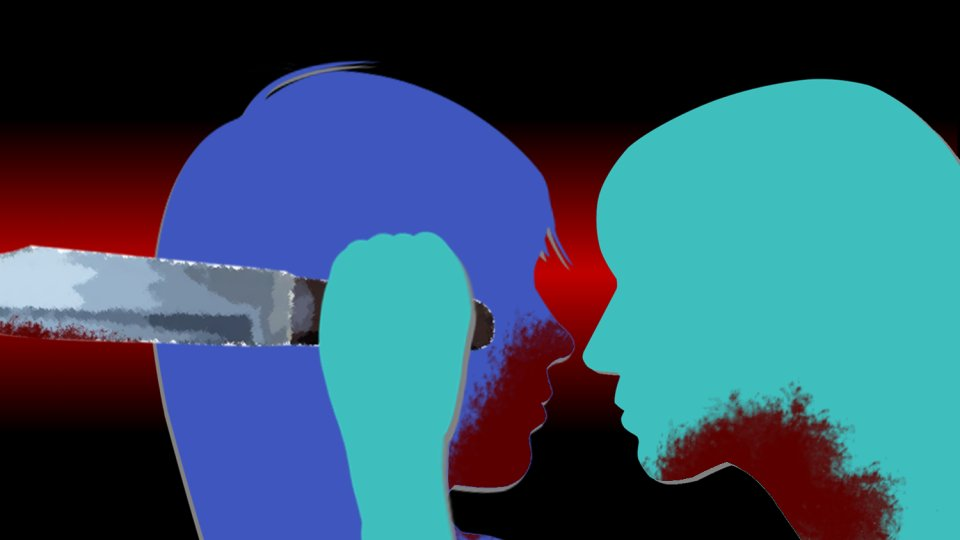

This scene is not unlocked yet in your progress
Green Eyes ~Feint~

The time limit: until the landslide is cleared.
I don't know how long that takes, but before it's done I have to have the whole Motoki-cho group in my hands.
I don't know how long that takes, but before it's done I have to have the whole Motoki-cho group in my hands.

Confining the Motoki-cho group is to keep Shigatsu Youka's hands off the four of them.
The Motoki-cho group knows more about Shigatsu Youka than the residents of Arata do.
There's no way Shigatsu Youka would leave these four alone.
Then I might as well pretend to have surrendered to Shigatsu Youka and take the four of them into my own keeping.
The Motoki-cho group knows more about Shigatsu Youka than the residents of Arata do.
There's no way Shigatsu Youka would leave these four alone.
Then I might as well pretend to have surrendered to Shigatsu Youka and take the four of them into my own keeping.
Right now Mom and the others are 'waking' new corpses and clearing the path to that hut.
Even if I manage to confine the four in the hut after that, if one of the corpses ends up guarding the Motoki-cho group, keeping the four safe will be hard.
Ideally, I'd meant to get the four away toward Toyotake the moment they were all together at the hut, but―
Even if I manage to confine the four in the hut after that, if one of the corpses ends up guarding the Motoki-cho group, keeping the four safe will be hard.
Ideally, I'd meant to get the four away toward Toyotake the moment they were all together at the hut, but―
If I can get hold of falsificaso here, and Natsumi-chan and I drop out of the Droga-infected, Shigatsu Youka can't watch us from afar.
Escaping would get fairly easy, but using falsificaso takes a syringe.
As if one would conveniently be lying under the secret base...
Escaping would get fairly easy, but using falsificaso takes a syringe.
As if one would conveniently be lying under the secret base...
I have to admit the situation is pretty grim.
Still, winning Shigatsu Youka's trust counts for a lot, and to keep the four safe, it's better after all to put them under my watch than to leave them in the settlement.
Right now, the only one who can negotiate with Shigatsu Youka is me.
Still, winning Shigatsu Youka's trust counts for a lot, and to keep the four safe, it's better after all to put them under my watch than to leave them in the settlement.
Right now, the only one who can negotiate with Shigatsu Youka is me.
All right, let me go over what I'm going to do now.
・Confine the Motoki-cho group in the abandoned hut
・Go to the settlement and urge the residents (Dad especially) to surrender to Shigatsu Youka
・Slip out of the settlement before hearing Dad's decision (so Shigatsu Youka doesn't learn it)
・Find falsificaso and inject myself
・Inject Natsumi-chan with falsificaso too, and get the four out of the hut
・Confine the Motoki-cho group in the abandoned hut
・Go to the settlement and urge the residents (Dad especially) to surrender to Shigatsu Youka
・Slip out of the settlement before hearing Dad's decision (so Shigatsu Youka doesn't learn it)
・Find falsificaso and inject myself
・Inject Natsumi-chan with falsificaso too, and get the four out of the hut
Honestly, it's hard to call it a perfect plan.
Shigatsu Youka probably can't pinpoint where anyone is except me and Natsumi-chan, but if it wanted to, it could at least block the mountain path.
Besides, I don't know how far Shigatsu Youka can reach.
Shigatsu Youka seems to be under this whole mountain area, but if I knew its exact range...
Shigatsu Youka probably can't pinpoint where anyone is except me and Natsumi-chan, but if it wanted to, it could at least block the mountain path.
Besides, I don't know how far Shigatsu Youka can reach.
Shigatsu Youka seems to be under this whole mountain area, but if I knew its exact range...
But there's no time to waver, either.
Once the landslide is cleared, a horde of corpses will probably come to the settlement.
Then there'll be no escaping anymore.
Once the landslide is cleared, a horde of corpses will probably come to the settlement.
Then there'll be no escaping anymore.
I climbed up from the stream and reached the graveyard clearing.
Someone... is there.
Someone... is there.

Auntie and Haruka.
They were walking with their eyes on the ground, as if searching the graveyard clearing for dropped coins.
If they're checking the ground of the graveyard clearing― have they noticed that the corpses are moving?
If so, they must have checked the memo and the audio I left.
They were walking with their eyes on the ground, as if searching the graveyard clearing for dropped coins.
If they're checking the ground of the graveyard clearing― have they noticed that the corpses are moving?
If so, they must have checked the memo and the audio I left.
"Mm... Auntie."
Crouching, I called to Auntie 10 meters away at the lowest volume I could.
Crouching, I called to Auntie 10 meters away at the lowest volume I could.

"Chigaya-chan...!?"
"Mm... Quiet!"
I put a finger to my lips, signaling her not to let Haruka notice.
"Mm... Quiet!"
I put a finger to my lips, signaling her not to let Haruka notice.
I went back a little way along the path I'd come by and hid in the shadow of a tree beside the path to the stream.
"Chigaya-chan...! You're safe!?"
"............"
Right now I'm being watched.
Right now I'm Shigatsu Youka's servant.
Auntie...
"............"
Right now I'm being watched.
Right now I'm Shigatsu Youka's servant.
Auntie...
I'm sorry!
"Ugh...!"
I jabbed Auntie in the pit of the stomach while she was off guard and doubled her over.
"Chigaya... chan... what are you doing..."
At once, I brought my mouth close to Auntie's ear.
"Chigaya... chan... what are you doing..."
At once, I brought my mouth close to Auntie's ear.
"Mm... Auntie, listen carefully.
We can't defy Shigatsu Youka.
Head for the abandoned hut out toward Toyotake."
If Auntie knows I'm being watched, she should catch my true meaning, if only vaguely.
If Auntie knows I'm being watched, she should catch my true meaning, if only vaguely.
"Ugh... Chigaya-chan..."
"Come on, don't dawdle. There's no time."
I grabbed Auntie's arm hard and tried to pull her to her feet.
I didn't think I'd hit her all that hard, but she wouldn't get up.
"Come on, don't dawdle. There's no time."
I grabbed Auntie's arm hard and tried to pull her to her feet.
I didn't think I'd hit her all that hard, but she wouldn't get up.
Suddenly my cheek took a hard blow, and I saw a flicker like fireworks in front of my eyes.
No―far too strong for a blow of the fist.
No―far too strong for a blow of the fist.
"Chigaya-chan...
If you so much as touch Haruka...

I won't go easy on anyone...!"
Auntie had kicked me in the face, it seemed.
So not a shred of my true meaning got through with that, after all.
I felt blood trickle from the corner of my mouth.
Auntie had kicked me in the face, it seemed.
So not a shred of my true meaning got through with that, after all.
I felt blood trickle from the corner of my mouth.
"Mm... Auntie, this isn't a game. Do as I say."
"Not defy Shigatsu Youka... Chigaya-chan, so you're already past saving too... Or is what I'm looking at already a corpse?"
"Mm... The soldiers who have become corpses are far stronger than this. Defy them, and Haruka won't get off lightly either."
"Then...
"Not defy Shigatsu Youka... Chigaya-chan, so you're already past saving too... Or is what I'm looking at already a corpse?"
"Mm... The soldiers who have become corpses are far stronger than this. Defy them, and Haruka won't get off lightly either."
"Then...

then I'll protect Haruka myself!"

Auntie picked up a tree branch at her feet and swung at me.
I caught it with the knife I'd drawn.
Auntie, too, had passed the mountain seclusion 20 years ago and married Uncle.
Worn out as I was, she wasn't an opponent I could fight while just putting on a show.
Auntie, too, had passed the mountain seclusion 20 years ago and married Uncle.
Worn out as I was, she wasn't an opponent I could fight while just putting on a show.
"Mm... You have a tree branch, Auntie; I have a well-honed knife.
You can see which of us has the advantage, can't you?"
"A knife smeared with blood like that can't cut much, I'm sure."
"Mm... Smeared with blood...?"
"A knife smeared with blood like that can't cut much, I'm sure."
"Mm... Smeared with blood...?"

There was blood on the knife.
Right, this is the blood from when I cut my arm yesterday.
True, it won't cut well like this, but if anything, it means I won't badly hurt Auntie.
Right, this is the blood from when I cut my arm yesterday.
True, it won't cut well like this, but if anything, it means I won't badly hurt Auntie.
............
Blood?


"And Chigaya, whatever you do, be careful not to get hurt."
"Mm... Hurt?"
"Yes. Don't shed any more blood, all right?"
Mom said that just now...
Could it be...!
Shigatsu Youka's weakness...!
"Mm... Hurt?"
"Yes. Don't shed any more blood, all right?"
Mom said that just now...
Could it be...!
Shigatsu Youka's weakness...!
"Raaah!!"
Auntie brought the branch down with all her might.
I dodged it by a hair― but
I dodged it by a hair― but
a moment later, Auntie's roundhouse kick caught me in the face again.
"Gh...!"
This time, it seemed, my nose had started bleeding.
My vision blurred.
I'm at quite a disadvantage in this fight.
My vision blurred.
I'm at quite a disadvantage in this fight.
But beating Auntie isn't the goal.
Somehow I have to get Auntie to head for the hut.
Somehow I have to get Auntie to head for the hut.
And besides, I've thought of a new plan.
If Shigatsu Youka's weakness is my blood― third-generation blood.
Whether my blood really is its weakness― I'd like to repeat Goto-chan's 'why,' but this is no time for it.
If Shigatsu Youka's weakness is my blood― third-generation blood.
Whether my blood really is its weakness― I'd like to repeat Goto-chan's 'why,' but this is no time for it.
I don't know by what logic it would be a weakness, but if so, I'd better get a fair amount of my blood onto Auntie before she heads for the hut.
If my guess is right, those things should stop coming near Auntie.
If my guess is right, those things should stop coming near Auntie.
"Hah... hah...
Auntie! Do as I say!"
I sheathed my knife and grabbed hold of Auntie.
I sheathed my knife and grabbed hold of Auntie.
I deliberately pressed the blood running from my face, and the wound on my arm that had reopened, against Auntie.
Without pushing her down or throwing her, I simply clung to Auntie.
"Chigaya-chan...! What are you playing at...!"
Auntie seemed to have noticed that something was off about me, too.
Apart from punching Auntie in the pit of the stomach at first, I hadn't attacked her at all.
Like me, Auntie only moved to keep her balance, so that my grip wouldn't push her over.
But―
Auntie seemed to have noticed that something was off about me, too.
Apart from punching Auntie in the pit of the stomach at first, I hadn't attacked her at all.
Like me, Auntie only moved to keep her balance, so that my grip wouldn't push her over.
But―

Auntie snatched my knife and pressed it to my throat.
On reflex I let go of Auntie and backed away.
Keeping the knife on me, Auntie drove me back against a tree.
On reflex I let go of Auntie and backed away.
Keeping the knife on me, Auntie drove me back against a tree.
"............"
"............"
Without a word between us, we stood glaring at each other.
On Auntie's neck, my blood was smeared thick.
About as much as I shed yesterday.
With this much blood on her, it should work at least as a charm against evil.
"............"
Without a word between us, we stood glaring at each other.
On Auntie's neck, my blood was smeared thick.
About as much as I shed yesterday.
With this much blood on her, it should work at least as a charm against evil.
"Mm... Auntie, go to the hut...
I'll bring the others later."
"............"
Bit by bit, the force drained from Auntie's eyes and brow, which had been so sharp.
"............"
Bit by bit, the force drained from Auntie's eyes and brow, which had been so sharp.

She took the knife away from me and drove it into the tree at my back.
"............"
"............"
"............ Haruka―I'll go get her."
"Mm... No. I'll talk to Haruka."
Once again we glared at each other.
Never looking away from Auntie, I kept staring into her eyes.
"............"
"............ Haruka―I'll go get her."
"Mm... No. I'll talk to Haruka."
Once again we glared at each other.
Never looking away from Auntie, I kept staring into her eyes.
Auntie dropped the knife where she stood and, without a word, headed off toward the hut.
"Hah..."
It seemed to have worked.
Still leaning against the tree, I slid slowly down to the ground.
With her daughter to protect, a mother's attack certainly hit home.
Had it landed wrong, it would have been no surprise if I'd passed out.
It seemed to have worked.
Still leaning against the tree, I slid slowly down to the ground.
With her daughter to protect, a mother's attack certainly hit home.
Had it landed wrong, it would have been no surprise if I'd passed out.
But fighting Auntie had given me a useful hint.
If my blood is Shigatsu Youka's weakness―
If my blood is Shigatsu Youka's weakness―
"Hah... hah..."
I really was quite exhausted, it seemed.
A night in the abandoned hut was never going to take the tiredness away, and the damage Auntie had done me was heavy, too.
I really was quite exhausted, it seemed.
A night in the abandoned hut was never going to take the tiredness away, and the damage Auntie had done me was heavy, too.
"Mom, where are you!?"
I heard Haruka's voice from above.
It's only a matter of time before she gets here.
I heard Haruka's voice from above.
It's only a matter of time before she gets here.
I can't let this chance to get to Haruka slip by.
All I can do now is stand up on sheer willpower.
All I can do now is stand up on sheer willpower.
I let Auntie go first in order to smear my blood on Haruka too.
If, in front of Auntie, I smeared blood on Haruka, the obvious staging would be an open book to Shigatsu Youka.
If, in front of Auntie, I smeared blood on Haruka, the obvious staging would be an open book to Shigatsu Youka.
When Haruka passes this way, I'll ambush her, knock her down and get blood on her.
And whisper to her to go to the hut, the same way.
That Auntie is there too.
And whisper to her to go to the hut, the same way.
That Auntie is there too.
And I have to do it with as much menace as I can―holding a knife to her and so on.
Because if Haruka washed the blood off in the stream, it would lose its effect.
So I have to frighten her enough that the idea never even occurs to her.
Not that anyone would bathe in the river at this time of year, at this hour.
Because if Haruka washed the blood off in the stream, it would lose its effect.
So I have to frighten her enough that the idea never even occurs to her.
Not that anyone would bathe in the river at this time of year, at this hour.
"Mm... Haruka?"

I'd called out just as Haruka was coming down the slope, as if following after Auntie.
Called by name out of nowhere, Haruka looked startled, and when she saw me, her eyes went even wider.
Called by name out of nowhere, Haruka looked startled, and when she saw me, her eyes went even wider.
"Ch... Chiga-nee... You're... safe."
Not yet―she's still a little too far away.
"Mm... What's wrong? Why that face... Actually, what are you doing out here?"
I smothered my breathlessness and kept my balance as best I could.
Hearing that, Haruka took two steps toward me.
Not yet―she's still a little too far away.
"Mm... What's wrong? Why that face... Actually, what are you doing out here?"
I smothered my breathlessness and kept my balance as best I could.
Hearing that, Haruka took two steps toward me.

"Chiga-nee, where have you been all this time! Everyone was worried about you!"

And at last, Haruka put both hands on my shoulders.
"Haruka... What on earth are you talking about?"
That should have left Haruka even less able to understand the situation.
And if, on top of that, I did something she couldn't understand―
"Haruka... What on earth are you talking about?"
That should have left Haruka even less able to understand the situation.
And if, on top of that, I did something she couldn't understand―
I threw Haruka to the ground with a hip throw and straddled her.
Then I covered Haruka's mouth with my bloodied hand.
Then I covered Haruka's mouth with my bloodied hand.


"Mm... Listen, Haruka. Keep on up this mountain path and you'll come to the abandoned hut.
Auntie is there, so go straight there―no detours."
Haruka struggled, breathing hard through her nose, but she couldn't get my hand off.
Haruka struggled, breathing hard through her nose, but she couldn't get my hand off.
"Mm... Haruka, do you understand?"
I brought my face close to Haruka, lying on her back.
My nosebleed, nearly stopped, dripped onto Haruka's face.
"――――"
Haruka seemed to be in a complete panic, and could only nod at my order.
I brought my face close to Haruka, lying on her back.
My nosebleed, nearly stopped, dripped onto Haruka's face.
"――――"
Haruka seemed to be in a complete panic, and could only nod at my order.
Having confirmed that, I got off Haruka at once and headed for the settlement.
Right―for that mother and daughter, I've done what can be done.
Auntie must have realized that I was acting in my right mind.
The story will get from Auntie to Haruka.
That leaves Natsumi-chan and Goto-chan.
Auntie must have realized that I was acting in my right mind.
The story will get from Auntie to Haruka.
That leaves Natsumi-chan and Goto-chan.
"Hah... hah..."
I'd run barely 200 meters, and already dizziness and breathlessness.
A body that wouldn't move as I wanted was a nuisance.
I put a hand on a nearby tree and steadied my breathing.
I'd run barely 200 meters, and already dizziness and breathlessness.
A body that wouldn't move as I wanted was a nuisance.
I put a hand on a nearby tree and steadied my breathing.
"............?"
Something was off about the forest.
Had this forest always been this bright?
The moon was strangely dazzling.
Something was off about the forest.
Had this forest always been this bright?
The moon was strangely dazzling.

The trees...
The forest is... dead...?
Is this another cataclysm brought on by Shigatsu Youka?
It was described as a parasitic fungus, so it would be no surprise if it kept growing by stealing other plants' nutrients.
And since it's moving corpses and digging underground tunnels, it must need energy to match.
Is this another cataclysm brought on by Shigatsu Youka?
It was described as a parasitic fungus, so it would be no surprise if it kept growing by stealing other plants' nutrients.
And since it's moving corpses and digging underground tunnels, it must need energy to match.
"Mm... ngh!"
A wave of dizziness.
The exhaustion really had built up, it seemed.
If I could just eat something, even a little, it would be easier.
I leaned against the tree I'd had my hand on and sank down where I was.
A wave of dizziness.
The exhaustion really had built up, it seemed.
If I could just eat something, even a little, it would be easier.
I leaned against the tree I'd had my hand on and sank down where I was.
I couldn't concentrate at all.
There was no telling how much time was left, and I couldn't afford to rest in a place like this.
There was no telling how much time was left, and I couldn't afford to rest in a place like this.

But my eyelids were hopelessly heavy.
All at once, my mind began to drift away.
All at once, my mind began to drift away.
Ah, I'm going to fall asleep like this.
Falling asleep would be easy, but the time is already...
Against that will, I sank into a doze.
Just a little... Just... a little...
Falling asleep would be easy, but the time is already...
Against that will, I sank into a doze.
Just a little... Just... a little...
"Mm...?"
How long had I been sitting here?
A presence, somewhere close.
Sensing it, I got up in a hurry.
A presence, somewhere close.
Sensing it, I got up in a hurry.
I'd slept for a little while, it seemed, without even dreaming.
Thanks to that I felt a little less tired, but that also meant I'd slept for a fair while.
Realizing that made me anxious, but what I had to worry about now was the presence I'd sensed.
I hid behind a tree and watched.
There seemed to be more than one presence.
Thanks to that I felt a little less tired, but that also meant I'd slept for a fair while.
Realizing that made me anxious, but what I had to worry about now was the presence I'd sensed.
I hid behind a tree and watched.
There seemed to be more than one presence.

About 20 people in Noh masks and red robes―
residents of Arata, presumably.
And facing them―
And facing them―


Kana with a knife, and Goto-chan, and...
that girl must be Natsumi-chan.
I couldn't tell what they were doing, but the mood was far from peaceful.
I listened closely.
I couldn't tell what they were doing, but the mood was far from peaceful.
I listened closely.
"Kana. Our guests. Turn back at once.
You must not go beyond this point."
Whose voice was that? Hard to tell one person from another.
And I could feel strong bloodlust.
Has the apocalyptic sound deepened their distrust of outsiders?
Either way, this isn't a situation that will end safely.
Whose voice was that? Hard to tell one person from another.
And I could feel strong bloodlust.
Has the apocalyptic sound deepened their distrust of outsiders?
Either way, this isn't a situation that will end safely.
"Move! I have to find Haruka-chan!"
So I'm not the only one feeling bloodlust from the residents.
Taking on that many may be hard even for Kana.
So I'm not the only one feeling bloodlust from the residents.
Taking on that many may be hard even for Kana.
"Eri-nee! Natsumi-chan! Get behind me!"
Still, for the people of Arata to fight Kana of all people―that's a drastic thing to do.
However many of them there are, taking on Kana won't end well for them.
Still, for the people of Arata to fight Kana of all people―that's a drastic thing to do.
However many of them there are, taking on Kana won't end well for them.
If so, what are the residents after?
Beat Kana by fighting all together, and wipe out Natsumi-chan, who has the witch's power...?
Dad and Grandma would never allow that.
Who's the ringleader...?
There has to be a ringleader.
Beat Kana by fighting all together, and wipe out Natsumi-chan, who has the witch's power...?
Dad and Grandma would never allow that.
Who's the ringleader...?
There has to be a ringleader.
That's it...!
This situation might be usable.
Right now, I can move a little, at least.
This situation might be usable.
Right now, I can move a little, at least.
"Mm... Everyone, wait!"
Knife in hand, I showed myself to everyone.
"Sis...!"
"Chiga-nee!"
"............ Who's that?"
Knife in hand, I showed myself to everyone.
"Sis...!"
"Chiga-nee!"
"............ Who's that?"
"Mm... Auntie and Haruka went to the abandoned hut out toward Toyotake!
All of you, take shelter there too!"
"Sis, but that place is..."
"Kana! Take care of those two! There's no time! Leave this to me!"
"G-got it! Eri-nee! Natsumi-chan! Hurry!"
"Sis, but that place is..."
"Kana! Take care of those two! There's no time! Leave this to me!"
"G-got it! Eri-nee! Natsumi-chan! Hurry!"
With Kana leading, Goto-chan and Natsumi-chan tried to break through.
"W-wait!"

The resident standing at the very front raised a nata high.
"Mm... Don't get in my way. I mean it. If you lay a hand on those girls... I'll kill you!"
I spread my arms and legs wide and blocked the path.
"Mm... Don't get in my way. I mean it. If you lay a hand on those girls... I'll kill you!"
I spread my arms and legs wide and blocked the path.
At that, the residents backed away, as if pushed by my spirit.
But... something was off.
But... something was off.
Having made sure Kana and the others had gotten away, I thrust the blood-soaked knife out in front of me, pressing them harder.
And the residents backed off even further.
What is it? What are they so afraid of...?
What is it? What are they so afraid of...?
"Ch-Chigaya-chan, stop...!"
Something's wrong... They're unnaturally afraid of me.
Could these people be...!
Something's wrong... They're unnaturally afraid of me.
Could these people be...!
I put the blade of the knife to my own face and added more fresh blood to it.
Holding it up for them to see, I closed in on them step by step.
Holding it up for them to see, I closed in on them step by step.
"S-stop!"
"Stay back!"
That's it, then―they're afraid of my blood.
These people are... corpses!
"Stay back!"
That's it, then―they're afraid of my blood.
These people are... corpses!
If so, what did they show up here for?
To finish off the Motoki-cho group here?
Or to keep watch on me?
To finish off the Motoki-cho group here?
Or to keep watch on me?
"Mm... I see. You're corpses, aren't you."
"............"
"............"
They fell silent, all of them alike.
"............"
They fell silent, all of them alike.
"Mm... Didn't you hear from Mom and Uncle?
The Motoki-cho group is being isolated so the people of the settlement don't learn about the Goddess."
Here I sheathed the knife to show I meant no harm.
At that, they too let the tension out of their shoulders.
Here I sheathed the knife to show I meant no harm.
At that, they too let the tension out of their shoulders.
"Mm... What's wrong? I'm on your side."
"............"
"............"
And then...
"............"
"............"
And then...
every one of them collapsed on the spot.
What? This... What's going on?
What? This... What's going on?
"All right, that's enough. That'll do."

"Uncle..."
"Moving this many really does seem hard on the Goddess. Well, let's let them sleep as they are."
Uncle appeared from the shadow of a tree, his eyes on the fallen.
"Moving this many really does seem hard on the Goddess. Well, let's let them sleep as they are."
Uncle appeared from the shadow of a tree, his eyes on the fallen.
"There was a suspicion, you see, that you'd gotten blood on Mifuyu-chan and Haruka on purpose.
If you'd gotten it on those three just now as well, we'd have taken it that you were trying to deceive us, but...
was I wrong?"
"N-no, Uncle, I'd never deceive you and Mom...!
I mean, there's no way I could take on this many corpses...
Besides―"
"Well, fine, it's fine, no need for excuses. Now then, Chigaya-chan... let's have a little talk, shall we?"
Uncle's eyes were unmistakably those of suspicion.
So deceiving them was impossible after all...?
"Well, fine, it's fine, no need for excuses. Now then, Chigaya-chan... let's have a little talk, shall we?"
Uncle's eyes were unmistakably those of suspicion.
So deceiving them was impossible after all...?
"Well, let me tell you our true intentions first...
Chigaya-chan, as you said, isolating the Motoki-cho group was a very good idea.
If word of the Goddess reaches the residents, the Goddess's existence becomes public to the whole world.
The Goddess only wants to live quietly here.
For that, we had to isolate those girls and get rid of your blood, Chigaya-chan.
Otherwise we'd have had to kill them all at once."
"N-no...! I'd never defy Shigatsu Youka...!"
"Now, now, Chigaya-chan, what you intended doesn't matter. What mattered was how quickly we reached the goal. For that, we simply made use of you. Mifuyu-chan and Haruka getting your blood all over them was a nuisance, true... but well, the isolation succeeded."
"Now, now, Chigaya-chan, what you intended doesn't matter. What mattered was how quickly we reached the goal. For that, we simply made use of you. Mifuyu-chan and Haruka getting your blood all over them was a nuisance, true... but well, the isolation succeeded."
"Mm... I...
was being deceived...?"
"Who can say? Whether you were really deceived or just lost the game of bluff with us, I don't know... But, Chigaya-chan, if you really meant to work with the Goddess, you should be glad of this outcome―or am I wrong?"
"Who can say? Whether you were really deceived or just lost the game of bluff with us, I don't know... But, Chigaya-chan, if you really meant to work with the Goddess, you should be glad of this outcome―or am I wrong?"
Completely... outplayed...!
Isolating the Motoki-cho group―our purposes differed, but Shigatsu Youka and I wanted the same thing.
But Shigatsu Youka, it seems, was seeing several moves further ahead than I was.
Isolating the Motoki-cho group―our purposes differed, but Shigatsu Youka and I wanted the same thing.
But Shigatsu Youka, it seems, was seeing several moves further ahead than I was.
"So far, everything has gone as the Goddess planned.
The real goal was Natsumi-chan alone, but for that―
Oops, let's keep the rest a secret for now."
So Shigatsu Youka's goal really was to bring Natsumi-chan here.
Either way, there's nothing more I can do.
So Shigatsu Youka's goal really was to bring Natsumi-chan here.
Either way, there's nothing more I can do.
"Oh, and I'll tell you now: your blood only works if it touches us or the Goddess right after it's shed.
Mifuyu-chan and Haruka―the blood on them is just dark red stains by now.
Well then, Chigaya-chan, you've worked hard.
Sleep a while."
I'd been struck in a vital spot at a speed I couldn't see, it seemed.
This time, holding on to consciousness by willpower is impossible.
I'll lose consciousness any moment.
This time, holding on to consciousness by willpower is impossible.
I'll lose consciousness any moment.
"Still, Chigaya-chan, you noticing the Goddess's weak point us a bit of a .
Just to be safe, we'll your blood drawn "
But... I did everything I could.
The rest... everyone... please...!
But... I did everything I could.
The rest... everyone... please...!